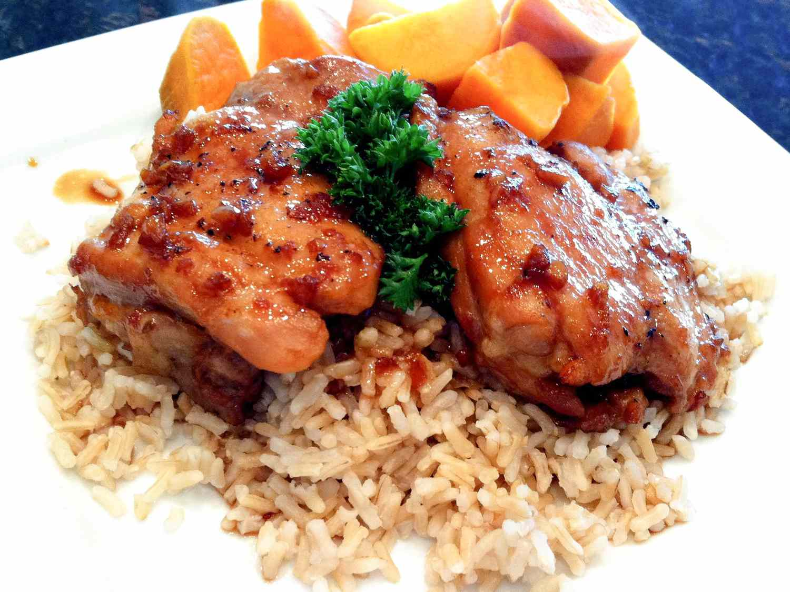

Grilled Chicken Adobo

Description
The Adobo is a very popular Filipino dish. This one uses grilled chicken, but you can use beef, pork, pork liver, and more as an alternative (even squids).
Ingredients
- 1 ½ cups soy sauce
- 1 ½ cups water
- ¾ cup vinegar/li>
- 3 tablespoons honey
- 1 ½ tablespoons minced garlic
- 3 bay leaves
- ½ teaspoon black pepper
- 3 pounds skinless, boneless chicken thighs
Steps
- Preheat an outdoor grill for high heat, and lightly oil grate.
- In a large pot, mix soy sauce, water, vinegar, honey, garlic, bay leaves, and pepper. Bring the mixture to a boil, and place the chicken into the pot. Reduce heat, cover, and cook 35 to 40 minutes.
- Remove chicken, drain on paper towels, and set aside. Discard bay leaves. Return the mixture to a boil, and cook until reduced to about 1 1/2 cups.
- Place chicken on the prepared grill, about 5 minutes on each side, until browned and crisp. Serve with the remaining soy sauce mixture.
Back to Index